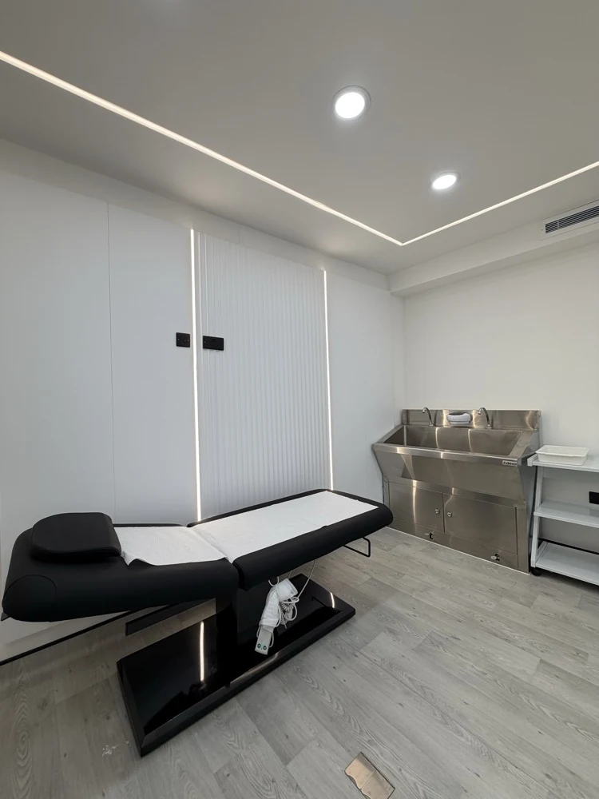

Anatomy & Physiology
Build foundational understanding of skin, facial anatomy and the structures relevant to aesthetic practice. Connect this knowledge with consultation, suitability and safe treatment planning.
Build your understanding of aesthetic treatments, consultation and safe practice through focused theory and supervised practical learning in London.

A structured three day programme bringing anatomy, treatment selection and core aesthetics topics together, with consultation, consent and aftercare throughout.
Build foundational understanding of skin, facial anatomy and the structures relevant to aesthetic practice. Connect this knowledge with consultation, suitability and safe treatment planning.
Explore skin assessment, contraindications, equipment and cartridge considerations, microneedling principles, aftercare and supervised practical learning.
Understand peel types and depth, skin preparation, consultation, contraindications, treatment principles, aftercare and recognising potential complications.
Learn skin assessment, mesotherapy principles, patient suitability, product-specific considerations, safe working and aftercare.
Explore the principles behind these treatment categories, relevant anatomy, consultation, product differences, suitability, treatment planning and aftercare.
Study facial assessment and anatomy, botulinum toxin principles, contraindications, complications awareness and the importance of appropriate prescribing arrangements and professional scope.
Explore facial assessment, filler principles, patient selection, treatment planning, anatomical risk awareness and supervised practical learning.
Profhilo, Lumi Eyes, filler dissolving and complication management are included in the programme content, alongside exosome theory. Practical participation follows your eligibility and the programme arrangements.
Consultation, consent, treatment selection, complications awareness, documentation and aftercare connect the subject areas throughout the programme.
We will confirm the practical activities, preparation, timetable and assessment arrangements before you enrol.
Tell us your current qualifications, relevant experience and whether you are still studying. The Academy will review the entry requirements and confirm which parts of this programme you are eligible to attend before you pay.
Anatomy and physiology content does not establish a formal Level 3 qualification. The programme has its own timetable, assessment and certificate requirements.
Training completion does not itself grant professional registration, insurance or authority to practise. The exact assessment requirements and certificate list will be confirmed before enrolment.
Share the programme you want and your relevant background.
Confirm the date, practical scope, timetable, assessment and certificate information.
Read the course information, student agreement and policies before accepting your place.
The Academy will provide the approved payment terms and link, then confirm your booking after payment is checked.
61 Mansell Street
London E1 8AN
academy@medicalwellnesslondon.com
The Wellness Injection Masterclass is a separate one day programme covering phlebotomy, IV therapy, IM vitamin injections and PRP.
Full payment, cancellation, refund, transfer and complaints terms are provided before booking.
Request course details